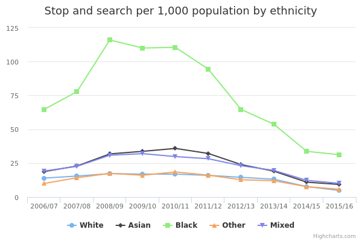

Stop and search
The main facts and figures show that:
-
in 2015/16, a total of 381,896 stop and searches were carried out, down 29% from the previous year
-
the numbers of stop and searches have fallen for all ethnic groups; however, they have fallen at different rates for different groups
-
White people saw a 38% decrease in stop and search, the largest fall between 2015/16 and the previous year
-
for ethnic minorities, the decrease in stop and search was lower: down 8% for Black people, down 16% for Asian people, down 19% for those of Mixed ethnicity and down 25% for Other
-
people from an ethnic minority background are 3 times more likely to be stopped and searched than White people
-
Black people are over 6 times more likely to be stopped and searched than White people
Things you need to know
Where the person’s ethnicity was not identified or was unknown, these incidents of stop and search have had ethnicity recorded as 'unreported'.
Differences in the numbers of stop and search between ethnic minorities in some areas are likely, in part, to reflect the differing ethnic makeup of the population living in those areas. The numbers will also be affected by the ethnicity of visitors to those areas.
When looking at stop and search rates by area, it’s important to note that a person stopped and searched in a particular area will not necessarily live in that area. Estimates of total population in a particular area are based on permanent residents of that area (not visitors), so figures that compare the total population with the number of stop and searches should be treated with caution.
What the data measures
This data measures the number of people stopped and searched, a police power to stop, question and search a person who is suspected of doing something illegal, such as carrying illegal drugs.
The police have the power to stop and search under the following 3 legislative powers:
- Section 1 of the Police and Criminal Evidence (PACE) Act 1984 and associated legislation
- Section 60 of the Criminal Justice and Public Order Act 1994
- Section 44/47A of the Terrorism Act 2000
The data measures the 'stop and search rate' for different ethnic groups in different areas of England and Wales. It compares the number of people stopped and searched from a particular ethnic group with the total number of people from that ethnic group living in the area.
The figures exclude vehicle-only searches, but includes those made by British Transport Police.
Why these ethnic categories were chosen
While the population estimates in this data are based on the results of the 2011 census, the ethnic categories used are those listed in the 2001 census. This is because these ethnic categories are easier to compare with the categories used when recording stop and search.
The 16 categories listed in the 2001 census are broadly the same as those used in the 2011 census, with the following exceptions: The 2001 census categorised Chinese people within 'Other ethnic group'.
The 2001 census did not list Gypsies and Irish Travellers or Arab people. The 2001 categories are therefore as follows:
White:
- English/Welsh/Scottish/Northern Irish/British
- Irish
- Any other White background
Mixed/Multiple ethnic groups:
- White and Black Caribbean
- White and Black African
- White and Asian
-
Any other Mixed/Multiple ethnic background
-
Asian/Asian British:
-
Indian
- Pakistani
- Bangladeshi
- Any other Asian background
Black/ African/ Caribbean/ Black British:
- African
- Caribbean
- Any other Black/ African/ Caribbean background
Other ethnic group:
- Chinese
- Any other ethnic group
Stop and search by ethnicity

View the numbers in a table
Stop and search per 1,000 by ethnicity
| 2006/07 | 2007/08 | 2008/09 | 2009/10 | 2010/11 | 2011/12 | 2012/13 | 2013/14 | 2014/15 | 2015/16 | |||||||||||
| All | 17.83 | 999,772 | 19.54 | 1,095,801 | 23.15 | 1,298,371 | 22.47 | 1,260,024 | 22.54 | 1,263,870 | 20.88 | 1,171,052 | 17.82 | 999,457 | 15.76 | 883,808 | 9.43 | 528,847 | 6.74 | 378,180 |
|---|---|---|---|---|---|---|---|---|---|---|---|---|---|---|---|---|---|---|---|---|
| Any other Asian | 20.48 | 17,113 | 26.81 | 22,403 | 39.49 | 33,005 | 40.83 | 34,126 | 47.37 | 39,586 | 43.86 | 36,657 | 32.81 | 27,421 | 27.33 | 22,841 | 16.01 | 13,384 | 13.68 | 11,429 |
| Any other Black background | 101.05 | 28,339 | 127.25 | 35,687 | 190.63 | 53,459 | 189.66 | 53,189 | 201.80 | 56,591 | 185.68 | 52,071 | 134.31 | 37,665 | 115.63 | 32,428 | 73.71 | 20,670 | 70.52 | 19,777 |
| Any other White background | 13.50 | 34,349 | 19.64 | 49,958 | 29.34 | 74,631 | 31.59 | 80,351 | 34.34 | 87,342 | 34.41 | 87,523 | 30.46 | 77,477 | 26.73 | 67,982 | 16.22 | 41,267 | 13.23 | 33,663 |
| Any other ethnic group | 12.36 | 6,966 | 18.05 | 10,174 | 22.88 | 12,897 | 21.43 | 12,082 | 26.12 | 14,721 | 23.64 | 13,324 | 18.26 | 10,295 | 16.51 | 9,306 | 10.57 | 5,957 | 8.62 | 4,857 |
| Any other mixed/multiple ethnic background | 20.95 | 6,074 | 27.37 | 7,938 | 37.41 | 10,847 | 39.27 | 11,388 | 38.48 | 11,158 | 41.54 | 12,045 | 33.95 | 9,845 | 27.08 | 7,853 | 17.58 | 5,097 | 15.25 | 4,423 |
| Bangladeshi | 26.31 | 11,768 | 36.49 | 16,317 | 57.91 | 25,898 | 63.36 | 28,336 | 63.54 | 28,416 | 55.05 | 24,618 | 36.34 | 16,252 | 30.24 | 13,523 | 15.57 | 6,962 | 15.89 | 7,106 |
| Black African | 34.23 | 33,875 | 42.54 | 42,098 | 68.65 | 67,935 | 65.87 | 65,191 | 68.68 | 67,970 | 58.90 | 58,288 | 39.68 | 39,268 | 33.54 | 33,189 | 21.38 | 21,159 | 20.13 | 19,917 |
| Black Caribbean | 98.28 | 58,457 | 113.03 | 67,233 | 159.43 | 94,835 | 145.89 | 86,779 | 137.09 | 81,547 | 110.50 | 65,729 | 73.47 | 43,699 | 58.18 | 34,609 | 35.41 | 21,063 | 31.11 | 18,507 |
| Chinese | 6.66 | 2,617 | 8.70 | 3,422 | 9.71 | 3,819 | 8.39 | 3,297 | 7.60 | 2,989 | 5.43 | 2,135 | 4.82 | 1,895 | 5.53 | 2,176 | 3.47 | 1,364 | 1.61 | 634 |
| Indian | 12.40 | 17,527 | 13.97 | 19,745 | 18.67 | 26,373 | 19.52 | 27,574 | 20.23 | 28,578 | 16.75 | 23,666 | 11.73 | 16,571 | 8.27 | 11,687 | 5.01 | 7,082 | 4.03 | 5,690 |
| Mixed White and Asian | 6.99 | 2,389 | 7.93 | 2,711 | 10.59 | 3,619 | 10.72 | 3,665 | 9.11 | 3,112 | 8.59 | 2,935 | 7.02 | 2,400 | 7.10 | 2,425 | 4.13 | 1,413 | 3.34 | 1,142 |
| Mixed White and Black African | 13.30 | 2,208 | 16.41 | 2,723 | 23.11 | 3,836 | 25.41 | 4,218 | 22.96 | 3,811 | 20.99 | 3,484 | 16.78 | 2,785 | 14.93 | 2,478 | 9.38 | 1,557 | 8.00 | 1,328 |
| Mixed White and Black caribbean | 30.05 | 12,822 | 33.68 | 14,371 | 45.65 | 19,478 | 46.74 | 19,945 | 43.29 | 18,474 | 37.90 | 16,171 | 31.18 | 13,307 | 26.47 | 11,294 | 16.39 | 6,993 | 12.81 | 5,467 |
| Pakistani | 22.48 | 25,280 | 25.85 | 29072 | 32.32 | 36,341 | 34.51 | 38,808 | 36.02 | 40,500 | 33.74 | 37,943 | 27.85 | 31,316 | 22.03 | 24,770 | 12.83 | 14,430 | 9.99 | 11,232 |
| White British | 14.01 | 632,236 | 15.25 | 688,248 | 16.62 | 750,005 | 16.08 | 725,624 | 15.90 | 717,511 | 14.96 | 675,342 | 13.65 | 615,997 | 12.36 | 557,784 | 7.23 | 326,264 | 4.33 | 195,572 |
| White Irish | 11.93 | 6,337 | 14.01 | 7,438 | 17.68 | 9,387 | 16.50 | 8,763 | 17.80 | 9,456 | 17.31 | 9,192 | 15.29 | 8,121 | 13.28 | 7,054 | 7.64 | 4,059 | 6.16 | 3,271 |
Summary
This data shows that:
-
White people make up 86% of the total population of England and Wales and accounted for 68% of stop and searches in 2015/16
-
in 2015/16, there were 5 stop and searches for every 1,000 White people in England and Wales and 31 stop and searches for every 1,000 Black people
-
in 2015/16, members of ethnic minorities were 3 times more likely to be stopped and searched than White people
-
between 2010/11 and 2014/15, the difference between rates of stop and search for White people and ethnic minorities narrowed, before widening again in 2015/16: this is because rates of stop and search fell more sharply for White people than for ethnic minorities in this year
-
for example, between 2010/11 and 2014/15, the likelihood of Black people being stopped and searched fell from 6 times that of White people to 4 times that of White people; it then rose again to 6 times more likely in 2015/16
-
there were 5 stop and searches of White people for every 1,000 people in that ethnic group in England and Wales in 2015/16
-
there were 14 stop and searches of people from an ethnic minority for every 1,000 people in those ethnic groups in England and Wales in 2015/16
Download image and data
Stop and search by ethnicity and area

Stop and search per 1,000 people
| White | Asian | Black | Other | Mixed | All | |||||||
| All - including BTP | 4.87 | 234,719 | 9.34 | 35,671 | 31.43 | 58,606 | 5.77 | 5,525 | 10.20 | 12,495 | 6.81 | 381,896 |
|---|---|---|---|---|---|---|---|---|---|---|---|---|
| Avon & Somerset | 2.82 | 4,205 | 3.30 | 109 | 14.46 | 447 | 2.47 | 38 | 4.60 | 130 | 3.50 | 5,598 |
| Bedfordshire | 2.59 | 1,234 | 3.90 | 318 | 7.37 | 219 | 2.51 | 22 | 5.31 | 98 | 3.59 | 2,208 |
| British Transport Police | N/A * | 2,213 | N/A * | 214 | N/A * | 405 | N/A * | 34 | N/A * | 135 | N/A * | 3,716 |
| Cambridgeshire | 3.15 | 2,289 | 6.68 | 264 | 18.38 | 187 | 1.11 | 14 | 5.12 | 82 | 3.85 | 3,098 |
| Cheshire | 3.70 | 3,689 | 1.64 | 21 | 21.14 | 69 | 2.87 | 15 | 4.32 | 45 | 5.71 | 5,865 |
| Cleveland | 4.84 | 2,548 | 5.28 | 92 | 13.62 | 43 | 3.83 | 17 | 2.95 | 17 | 4.93 | 2,746 |
| Cumbria | 6.92 | 3,407 | 14.76 | 43 | 38.00 | 22 | 3.74 | 6 | 4.79 | 12 | 7.20 | 3,600 |
| Derbyshire | 3.16 | 3,003 | 8.73 | 322 | 11.20 | 113 | 0.41 | 3 | 6.48 | 93 | 3.57 | 3,635 |
| Devon & Cornwall | 3.39 | 5,524 | 4.10 | 48 | 26.06 | 107 | 3.27 | 31 | 3.52 | 55 | 3.67 | 6,116 |
| Dorset | 5.22 | 3,731 | 8.23 | 88 | 101.62 | 326 | 4.00 | 24 | 11.47 | 109 | 6.69 | 4,979 |
| Durham | 7.24 | 4,385 | 3.52 | 18 | 5.67 | 6 | 2.97 | 9 | 3.54 | 15 | 7.19 | 4,449 |
| Dyfed-Powys | 7.04 | 3,552 | 7.02 | 30 | 24.53 | 21 | 3.49 | 7 | 6.74 | 22 | 7.40 | 3,810 |
| Essex | 1.10 | 1,762 | 2.28 | 89 | 7.38 | 256 | 1.43 | 22 | 2.57 | 71 | 1.40 | 2,418 |
| Gloucestershire | 3.09 | 1,759 | 4.18 | 44 | 23.30 | 120 | 3.33 | 10 | 9.81 | 85 | 3.42 | 2,044 |
| Greater Manchester | 1.60 | 3,596 | 2.45 | 602 | 4.31 | 319 | 0.86 | 46 | 3.26 | 198 | 1.85 | 4,968 |
| Gwent | 1.82 | 1,011 | 2.58 | 26 | 3.14 | 10 | 1.12 | 4 | 7.39 | 41 | 1.98 | 1,143 |
| Hampshire | 5.03 | 8,907 | 5.41 | 310 | 40.58 | 708 | 1.96 | 41 | 8.80 | 272 | 5.85 | 11,108 |
| Hertfordshire | 5.69 | 5,565 | 9.08 | 582 | 19.24 | 604 | 7.46 | 116 | 10.73 | 295 | 7.19 | 8,028 |
| Humberside | 0.40 | 354 | 0.33 | 4 | 0.89 | 4 | 0.00 | 0 | 0.49 | 4 | 0.56 | 513 |
| Kent | 3.22 | 5,179 | 3.03 | 164 | 26.84 | 614 | 48.22 | 754 | 4.91 | 134 | 4.61 | 7,966 |
| Lancashire | 3.62 | 4,778 | 4.97 | 541 | 12.65 | 68 | 0.96 | 10 | 4.60 | 75 | 3.83 | 5,596 |
| Leicestershire | 1.51 | 1,203 | 1.94 | 302 | 6.09 | 150 | 0.52 | 10 | 2.63 | 54 | 1.80 | 1,836 |
| Lincolnshire | 5.33 | 3,712 | 3.05 | 17 | 16.01 | 41 | 0.70 | 2 | 6.46 | 40 | 5.59 | 3,991 |
| London, City of | N/A | 802 | N/A | 232 | N/A | 215 | N/A | 15 | N/A | 58 | N/A | 1,574 |
| Merseyside | 6.38 | 8,331 | 3.71 | 70 | 12.44 | 181 | 2.37 | 51 | 5.01 | 105 | 10.19 | 14,076 |
| Metropolitan Police | 12.93 | 63,106 | 14.85 | 20,589 | 42.35 | 46,098 | 9.05 | 3,666 | 16.64 | 6,739 | 18.87 | 154,064 |
| Norfolk | 5.84 | 4,832 | 12.85 | 126 | 46.43 | 214 | 3.87 | 21 | 8.38 | 84 | 6.30 | 5,404 |
| North Wales | 2.29 | 1,539 | 1.74 | 11 | 5.34 | 8 | 2.25 | 10 | 0.81 | 4 | 2.41 | 1,661 |
| North Yorkshire | 5.12 | 3,942 | 15.23 | 151 | 10.78 | 39 | 2.57 | 16 | 8.85 | 66 | 5.56 | 4,426 |
| Northamptonshire | 2.17 | 1,373 | 3.94 | 89 | 11.88 | 201 | 3.86 | 21 | 4.79 | 68 | 2.67 | 1,850 |
| Northumbria | 4.95 | 6,653 | 5.69 | 215 | 14.43 | 130 | 1.01 | 18 | 3.13 | 39 | 4.99 | 7,097 |
| Nottinghamshire | 1.89 | 1,831 | 3.96 | 191 | 8.83 | 241 | 2.13 | 33 | 3.91 | 121 | 2.36 | 2,575 |
| South Wales | 4.72 | 5,651 | 4.61 | 165 | 10.68 | 136 | 1.27 | 24 | 4.62 | 82 | 5.60 | 7,188 |
| South Yorkshire | 2.29 | 2,788 | 7.04 | 385 | 7.61 | 196 | 1.29 | 32 | 5.77 | 120 | 2.79 | 3,742 |
| Staffordshire | 3.24 | 3,342 | 7.00 | 246 | 17.42 | 149 | 1.76 | 13 | 6.88 | 97 | 3.76 | 4,130 |
| Suffolk | 3.15 | 2,184 | 5.47 | 60 | 25.39 | 174 | 4.07 | 19 | 7.46 | 93 | 3.57 | 2,597 |
| Surrey | 4.52 | 4,625 | 7.46 | 403 | 38.05 | 473 | 2.03 | 38 | 8.45 | 199 | 5.50 | 6,231 |
| Sussex | 4.33 | 6,516 | 6.39 | 261 | 44.29 | 631 | 4.34 | 71 | 6.03 | 181 | 4.87 | 7,825 |
| Thames Valley | 3.93 | 7,549 | 6.42 | 1,237 | 14.10 | 973 | 2.58 | 84 | 11.09 | 621 | 5.12 | 11,613 |
| Warwickshire | 5.45 | 2,757 | 7.61 | 173 | 39.84 | 177 | 6.03 | 28 | 12.58 | 100 | 5.99 | 3,265 |
| West Mercia | 6.23 | 7,327 | 24.31 | 528 | 56.50 | 286 | 4.77 | 27 | 14.04 | 189 | 6.91 | 8,447 |
| West Midlands | 5.09 | 9,770 | 8.12 | 4,006 | 16.26 | 2,668 | 0.60 | 38 | 9.98 | 960 | 6.45 | 17,660 |
| West Yorkshire | 5.56 | 10,114 | 7.79 | 2,188 | 8.80 | 409 | 1.65 | 51 | 8.77 | 422 | 6.52 | 14,507 |
| Wiltshire | 3.24 | 2,081 | 5.58 | 97 | 24.31 | 148 | 3.49 | 14 | 6.64 | 65 | 3.72 | 2,533 |
Summary
This data shows that:
-
in 2015/16, the biggest difference in rates of stop and search between Black and White people was in Dorset, where Black people were 19 times more likely to be stopped and searched than White people
-
the next biggest difference was found in Sussex, where Black people were 10 times more likely to be stopped and searched than White people
-
in 2015/16, Durham was the only area where White people were more likely to be stopped and searched compared to Black people (they were 1.2 times more likely)
-
looking at the figures for all ethnicities including White, there were 7 stop and searches for every 1,000 people in England and Wales in 2015/16
-
London had the highest rate of stop and search across all ethnicities, at 19 for every 1,000 people
-
Humberside had the lowest rate of stop and search across all ethnicities, at 1 for every 1,000 people
Download image and data
Methodology and data type
Purpose Of Data Source
This data in an Annual Data Requirement (ADR) which means it’s mandatory for police forces in England and Wales to provide the Home Office with the number of stop and searches carried out in the financial year by ethnicity.
Methodology
Stop and search data is based on the 43 territorial police forces in England and Wales (excludes British Transport Police) between the year ending March 2007 and March 2009. From the year ending March 2010 onwards the collection is based on 44 police forces including British Transport Police.
Population is based on 2011 Census from the Office for National Statistics broken down by ethnicity using the 16+1 ethnic categories and police force area.
There is a total population of 56,075,912 in England and Wales.
Stop and search data is collected by statisticians in Crime and Policing Analysis.
Data type
Administrative data
Type of statistic
National statistic
Disclosure control
Ethnicity of individuals stop and searched are collected on a 16+1 self-defined ethnicity codes. A small proportion of individuals did not state their ethnicity these are recorded as 'not reported' in the data. For each financial year the proportion (%) of total stops in the year that were recorded with an ethnicity ‘not reported’ are: - 2006/07 – 10% - 2007/08 – 7% - 2008/09 – 5% - 2009/10 – 5% - 2010/11 – 4% - 2011/12 – 4% - 2012/13 – 5% - 2013/14 – 5% - 2014/15 – 6% - 2015/16 – 9%
Estimation
Number of stop and searches are provided as whole numbers to represent the number of persons stopped. Further calculations of proportions and rates are rounded to 2 dp.
Further technical information
Further technical information National Statistics - These statistics have been assessed by the UK Statistics Authority to ensure they continue to meet the standards required to be designated as National Statistics.
Data recording - Under the code of practice for the Statutory Powers of stop and search (see PACE code A), officers are required to make a record of the details of a stop and search at the time of the encounter. On request, they may be required to give a copy of the record to the person searches. This requirement reduces the risk of a stop and search going unrecorded. - Having a universal code of practice helps to ensures that stop and searches, and their subsequent arrests are standardised across forces, both in terms of the processes involved, and the data recorded. - A number of forces are moving towards electronic recording of stop and search encounters. This ensures that data is quickly and accurately transferred to force systems. However, this does also present challenges in terms of training officers to record stops in a comparable way. - Some forces still use paper records to record encounters. These are more likely to involve recording errors, or may not be uploaded into force systems in a timely manner.
Quality assurance - Forces’ use and recording of stop and search are monitored by Her Majesty’s Inspectorate of Constabulary (HMIC). HMIC carries out regular inspections and produce reports on the inspections. - The Home Office statisticians undertake quality assurance checks which include looking for missing/incomplete data, inconsistencies in the data, extreme values. Trend analyses also look for unusual or unexpected trends in the data. Any inconsistencies or unusual trends are flagged with forces, who are requested to either explain the trends, or resubmit to amend the data. All data are then confirmed by forces during a data reconciliation to confirm they are content for the figures to be published.
Publishing the data - Some forces publish stop and search data to increase transparency and accountability, as well as to monitor performance. This demonstrates a need for forces to have accurate and reliable data.
Data source details
-
Home Office
-
27 October 2016
-
27 October 2016
-
October 2017
-
Annual
-
https://www.gov.uk/government/uploads/system/uploads/attachment_data/file/562977/police-powers-procedures-hosb1516.pdf